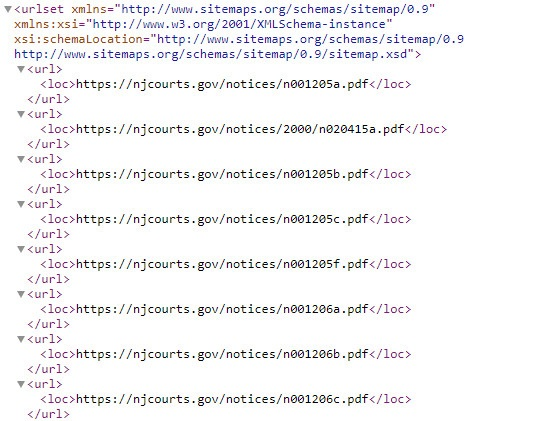

<div id="ajax-page" class="ajax-page-content">
    <div class="ajax-page-wrapper">
        <div class="ajax-page-nav">
            <div class="nav-item ajax-page-prev-next">
                <a class="ajax-page-load" href="portfolio-1.html"><i class="zmdi zmdi-chevron-left"></i></a>
                <a class="ajax-page-load" href="portfolio-3.html"><i class="zmdi zmdi-chevron-right"></i></a>
            </div>
            <div class="nav-item ajax-page-close-button">
                <a id="ajax-page-close-button" href="#"><i class="zmdi zmdi-close"></i></a>
            </div>
        </div>

        <div class="ajax-page-title">
            <h1>Sitemap Generator</h1>
        </div>

        <div class="row">
            <div class="col-sm-5 col-md-5 portfolio-block">
                <div class="owl-carousel portfolio-page-carousel">
                    <div class="item">
                        
                    </div>
                </div>


                <!--
                <div class="portfolio-page-image">
                    
                </div>
                -->

                <script type="text/javascript">
                    jQuery(document).ready(function ($) {

                        $('.portfolio-page-carousel').owlCarousel({
                            smartSpeed: 1200,
                            items: 1,
                            loop: true,
                            dots: true,
                            nav: true,
                            navText: false,
                            margin: 10
                        });

                    });
                </script>
            </div>

            <div class="col-sm-7 col-md-7 portfolio-block">
                <!-- Project Description -->
                <div class="block-title">
                    <h3>Description</h3>
                </div>
                

                <p class="text-justify">Developed a solution for a NJ Courts website to generate an XML sitemap for the dynamic content on the site.<br>
                    I created a python script that utilized the SCP (paramiko) library to SFTP onto the site's servers to gather JSON files which contained the site's content, parse them for relevant content, and generate a sitemap in XML format. While checking for content it would also check files for modified date and, if requested, would append the modified date for that file to the XML sitemap.<br><br>
                    
                    The python script would have specific mapping and time restrictions based on each type of content that would determine when content would be added to, or removed from the site map.<br><br>
                    
                    
                    I then bundled the python into an executable and utilized a service on a Windows 2012 server to manage the solution</p>

                <!-- Technology -->
                <div class="tags-block">
                    <div class="block-title">
                        <h3>Technology</h3>
                    </div>
                    <ul class="tags">
                        <li><a>Python</a></li>
                        <li><a>SFTP</a></li>
                        <li><a>Windows</a></li>
                        <li><a>NSSM</a></li>
                        <li><a>XML</a></li>
                        <li><a>JSON</a></li>
                    </ul>
                </div>
                <!-- /Technology -->
            </div>
        </div>
    </div>
</div>